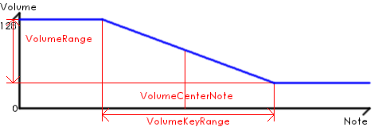

システムコマンド
| Statement | Range | Description |
|---|---|---|
| #TITLE{...}; | (任意文字列) | タイトルを記述する．
#TITLE{タイトル};
|
| #SIGN{...}; | [A-G][+#-b]?m? | 調性を指定する．ノートにデフォルトで変化記号(シャープ/フラット)が付加される．ナチュラルを指定したい場合は，反対の変化記号をつける．
#SIGN{Fm}; fgab<cdef; // 調性をFm(b,e,a,d にフラット)にする
|
| #REV{...}; | (octave|volume) | シフトの方向を反転する．octave が指定された場合，'<'でオクターブダウン，'>'でオクターブアップ．volume が指定された場合，'('でボリュームダウン，')'でボリュームアップ．何も指定しない場合('#REV;'と記述)，両方を反転させる．
#REV; cdefgab>c; // "cdefgab<c" と同じ |
| #MACRO{...}; | (static|dynamic) | マクロの展開方法を指定する．static が指定された場合，マクロ内のマクロを定義時に展開する(デフォルト)．dynamic が指定された場合，マクロ内のマクロを展開時に展開する．
#MACRO{static}; #A=cde;#B=Afg;o5B; #A=gfe;o4B; // "o5cdefg; o4cdefg" と展開される
#MACRO{dynamic}; #A=cde;#B=Afg;o5B; #A=gfe;o4B; // "o5cdefg; o4gfefg" と展開される
|
| #VMODE{...}; | (n88|mdx|mck|tss|%x|%v) | 全トラックの %x, %v コマンドを一括指定する．
#VMODE{%x1%v1,2}; v15cv12cv9c; // 全トラックに %x1%v1,2 が適用される
|
| #TMODE{...}; | (unit|fps|timerb)=?n | 't' コマンドの基本単位を指定する. 'unit'を指定した場合, 't' コマンド値は指定値ｎで割られる. 'fps'は指定値ｎで[frame/second]値を指定(default;60)し、t コマンド値で[frames/beat]．'timerb'は指定値ｎで動作クロック[kHz]を指定(default;4000)し，t コマンド値で192部音符長で割り込みを行う timerB OPMレジスタ値を指定する．
#TMODE{unit=100}; t10050cde; // t10050 means bpm=100.5
#TMODE{fps=60}; t30cde; // t30 means 30[frames/beat](bpm=120)
|
| #QUANTn; | 1 - (8) | 'q'コマンドの最大値を変更する．'q'コマンドのデフォルト値は最大値の75%(切捨て)になる．
#QUANT16; q8cde; // q の最大値を16に設定 |
| #FPSn; | 1 - 1000 (60) | @fpsコマンドのデフォルト値を変更する．
#FPS100; // @fps のデフォルト値を100に設定 |
| #END; | このコマンド以降の文字列を無視する．
#END; この文字列は無視される． |
#SIGN{...};の書式
| C, Am | (全てナチュラル) |
| G, Em | f+ |
| D, Bm | f+, c+ |
| A, F+m, F#m | f+, c+, g+ |
| E, C+m, C#m | f+, c+, g+, d+ |
| B, G+m, G#m | f+, c+, g+, d+, a+ |
| F+, F#, D+m, D#m | f+, c+, g+, d+, a+, e+ |
| C+, C#, A+m, A#m | f+, c+, g+, d+, a+, e+, b+ |
| F, Dm | b- |
| B-, Bb, Gm | b-, e- |
| E-, Eb, Cm | b-, e-, a- |
| A-, Ab, Fm | b-, e-, a-, d- |
| D-, Db, B-m, Bbm | b-, e-, a-, d-, g- |
| G-, Gb, E-m, Ebm | b-, e-, a-, d-, g-, c- |
| C-, Cb, A-m, Abm | b-, e-, a-, d-, g-, c-, f- |
例)ホールトーンスケールを指定．#SIGN{f+,g-,a-,b-};
マクロ定義
| Statement | Range | Description |
|---|---|---|
| #[A-Z]=...; | (MML文字列) | マクロを定義する．'#ABCD=c;' or '#A-D=c;' でマクロA,B,C,Dに同時代入．
#A=cde; l8AAgedAd; // "l8cdecdegedcded" と展開される #A-C=cde; l8ABgedCd; // "l8cdecdegedcded" と展開される |
| #[A-Z]+=...; | (MML文字列) | マクロに文字列加算する．'#ABCD+=c;' or '#A-D+=c;' でマクロA,B,C,Dに同時加算．
#A=cde; #B=efg; #AB+=fg; l8AB; // "l8cdefgefgfg" と展開される |
テーブル定義
| Statement | Range | Description |
|---|---|---|
| #WAVBn{...}; | n;0 - 255 | SCC音源(%4)で参照する波形を16進数文字列で定義する．TSSCP の #WAVB から仕様が変更になり，一般的な unsigned char (-128=0x80, -1=0xff, 127=0x7f) で表現する．
#WAVB0{36454d4b41362f303639332309efd9cc362f220df2d9c8c3c6cbccc6bab0aeb7}; %4@0 cde;
|
| #WAVn{...}(formula...); | n;0 - 255 | Wave table音源(%4)で参照する波形を定義する．テーブルのエントリ数32個でSCC音源波形を記述する．波形テーブルは -128～127の範囲で記述する．エントリ数が32以下の場合は 0 が埋められる．
#WAV0{(0,127)8,(127,-128)16,(-128,0)8}; %4@0 cde;
|
| #WAVCOLOR/#WAVCn{...}; | n;0 - 255 | Wave table音源(%4)で参照する波形をunsigned int 16進数文字列(wave color)で定義する．wave color は，ハモンドオルガンの基音より上の7本のドローバーをLSBから各4bitで表現したunsigned int値で，MSBの4bitで合成する波形の番号を指定できる．
#WAVCOLOR0{08400f0f}; %4@0 cde;
|
| #TABLEn{...}(formula...); | n;0 - 254 | テーブルエンベロープ(@@,na,np,nt,nf,_@@,_na,_np,_nt,_nf)で参照するテーブルを定義する．値の範囲は参照するエンベロープコマンドに依存する．
#TABLE0{(64,0)5,(32,0)5,(16,0)5}; q8 na0 cde;
|
#TABLEn{...};と#WAVn{...};の書式
- カンマ区切りで数値を記述する．
例) #TABLE0{0,2,4,6} - "|"が指定されている場合，終端到達後，その位置から繰り返す．
例) #TABLE0{0,2|4,6} (0,2,4,6,4,6,4,6...) - "[]n"で括られている場合，指定値分その中を繰り返す．
例) #TABLE0{[0,1]3,2,3} (0,1,0,1,0,1,2,3) - (a)n の書式は，aをn回繰り返す．
例) #TABLE0{(0)4} (#TABLE0{0,0,0,0} と同等) - (a,b)n の書式は，[a,b)をnエントリで線形補間する．最後の値には到達しないので注意．
例) #TABLE0{(0,8)4} (#TABLE0{0,2,4,6} と同等) - (a,b,c,...)n の書式は，数値リスト[a,b,c,...)をnで割った内分値を採用する．
例) #TABLE0{(0,6,3,9)9} (#TABLE0{0,2,4,6,5,4,3,5,7} と同等) - 補間の際，小数値は四捨五入される．
例) #TABLE0{(0,1,3)8} (#TABLE0{0,0,1,1,1,2,2,3} と同等) - {...}の後に'[repeat]*[magnify]+[offset]'と続ける事でエントリの繰り返し，倍率(負値/小数可)，オフセット(負値/小数可)を指定できる．
これらは，一旦，数値リストが整数に丸め込まれてから計算され，その結果は再び整数に丸め込まれる．
- #TABLE0{0,1,2,3}3 (#TABLE0{0,0,0,1,1,1,2,2,2,3,3,3} と同等)
- #TABLE0{0,1,2,3}*2 (#TABLE0{0,2,4,6} と同等)
- #TABLE0{0,1,2,3}+2 (#TABLE0{2,3,4,5} と同等)
- #TABLE0{0,1,2,3}3*2-2 (#TABLE0{-2,-2,-2,0,0,0,2,2,2,4,4,4} と同等)
- #TABLE0{(0,3)6}*5 (#TABLE0{0,5,5,10,10,15} と同等)
- #TABLE0{(0,6)6}*0.5 (#TABLE0{0,1,1,2,2,3} と同等)
FM音源 音色定義
| Statement | Range | Description |
|---|---|---|
| #@n{...}(sequence...); | n;0 - 255 | @al,@fb,@で指定する各値をパラメータとして羅列する(ただしこのコマンドでは multiple に小数の指定が可能．"@"コマンドでは不可．小数部は"@ml"の第２引数に相当する．)．使用するオペレータの数(@al第１引数)は，定義したパラメータの数によって自動的に決定される．パラメータ数は18(1operator), 33(2operators), 48(3operators), 63(4operators)．アルゴリズムについては"@al"の項を参照．
#@0{
alg[0-15], fb[0-7], fbc[0-3],
(ws, ar, dr, sr, rr, sl, tl, ksr, ksl, mul, dt1, detune, ams, phase, fixedNote) x operator count
};
%6@0 cde;
|
| #OPL@n{...}(sequence...); | n;0 - 255 | OPL3で指定する各値をパラメータとして羅列する．パラメータ数は13(1operator), 24(2operators), 35(3operators), 46(4operators)．3operatorsの場合，4operators接続のop#3をスルーするアルゴリズムが適用される．2operatorsの場合，alg=0,1 以外，エラーを返す．アルゴリズムについては"@al"の項を参照．
#OPL@0{
alg[0-3], fb[0-7],
(ws[0-7], ar[0-15], dr[0-15], rr[0-15], egt[0,1], sl[0-15], tl[0-63], ksr[0,1], ksl[0-3], mul[0-15], ams[0-3]) x operator count
};
%6@0 cde;
|
| #OPM@n{...}(sequence...); | n;0 - 255 | OPMで指定する各値をパラメータとして羅列する．パラメータ数は13(1operator), 24(2operators), 35(3operators), 46(4operators)．3operatorsの場合，4operators接続のop#3をスルーするアルゴリズムが適用される．2operatorsの場合，4operators接続のop#2,#3をスルーするアルゴリズムが適用される．アルゴリズムについては"@al"の項を参照．
#OPM@0{
alg[0-7], fb[0-7],
(ar[0-31], dr[0-31], sr[0-31], rr[0-15], sl[0-15], tl[0-127], ks[0-3], mul[0-15], dt1[0-7], dt2[0-3], ams[0-3]) x operator count
};
%6@0 cde;
|
| #OPN@n{...}(sequence...); | n;0 - 255 | OPN指定する各値をパラメータとして羅列する．パラメータ数は12(1operator), 22(2operators), 32(3operators), 42(4operators)．3operatorsの場合，4operators接続のop#3をスルーするアルゴリズムが適用される．2operatorsの場合，4operators接続のop#2,#3をスルーするアルゴリズムが適用される．アルゴリズムについては"@al"の項を参照．
#OPN@0{
alg[0-7], fb[0-7],
(ar[0-31], dr[0-31], sr[0-31], rr[0-15], sl[0-15], tl[0-127], ks[0-3], mul[0-15], dt1[0-7], ams[0-3]) x operator count
};
%6@0 cde;
|
| #OPX@n{...}(sequence...); | n;0 - 255 | OPXで指定する各値をパラメータとして羅列する．alg指定値もOPXのアルゴリズム番号を指定する．パラメータ数は14(1operator), 26(2operators), 38(3operators), 50(4operators)．algの最大値は，オペレータ数によって変わる(1operator=0のみ，2operators=0-3，3operators=0-7，4operator=0-15，OPXと同等)．アルゴリズムについては"@al"の項を参照．
#OPX@0{
alg[0-15], fb[0-7],
(ws[0-7], ar[0-31], dr[0-31], sr[0-31], rr[0-15], sl[0-15], tl[0-127], ks[0-3], mul[0-15], dt1[0-7], detune[], ams[0-3]) x operator count
};
%6@0 cde;
|
| #MA@n{...}(sequence...); | n;0 - 255 | MA3で指定する各値をパラメータとして羅列する．パラメータ数は14(1operator), 26(2operators), 38(3operators), 50(4operators)．alg=0,1はパラメータ数26(2operators)以外ではエラーを返す．3,4operatorsの場合，alg=2-7以外，エラーを返す．3operatorsでalg=2-7の場合，4operators接続のop#3をスルーするアルゴリズムが適用される．2operatorsでalg=2-7の場合，4operators接続のop#2,#3をスルーするアルゴリズムが適用される．アルゴリズムについては"@al"の項を参照．
#MA@0{
alg[0-7], fb[0-7],
(ws[0-31], ar[0-15], dr[0-15], sr[0-15], rr[0-15], sl[0-15], tl[0-63], ksr[0,1], ksl[0-3], mul[0-15], dt1[0-7], ams[0-3]) x operator count
};
%6@0 cde;
|
音色定義コマンドについて
上述各コマンドを用いてパラメータを予め定義し，シーケンス内で'%6@[0-255]'で呼び出す．
パラメータを羅列する際，数字以外は全て区切り文字として認識する(ただし可読性のためカンマ/スペース/タブを推奨．また，可読性のためオペレータ間の区切りをセミコロンにするのも良い)． また，{...}の直後にMMLシーケンスを記述する事で，'%6@[0-255]'音色呼出と同時に実行するシーケンスを設定する事ができる．ただし，このMMLシーケンスに譜面コマンド(c,d,e,f,g,a,b,r)と音色変更コマンド(%,@)を含めるとエラー．
パラメータを羅列する際，数字以外は全て区切り文字として認識する(ただし可読性のためカンマ/スペース/タブを推奨．また，可読性のためオペレータ間の区切りをセミコロンにするのも良い)． また，{...}の直後にMMLシーケンスを記述する事で，'%6@[0-255]'音色呼出と同時に実行するシーケンスを設定する事ができる．ただし，このMMLシーケンスに譜面コマンド(c,d,e,f,g,a,b,r)と音色変更コマンド(%,@)を含めるとエラー．
// 音色呼び出しの際，フィルタ/クォンタイズ設定も一緒に行う．
#@0{ 8, 0, 0;
16, 40, 0, 34, 34, 0, 13, 1, 0, 1, 0, 0, 0, 0, 0;
1, 34, 28, 0, 0, 15, 35, 1, 0, 2, 0, 0, 0, 0, 0;
4, 63, 63, 0, 0, 0, 42, 1, 0, 5, 0, 0, 0, 0, 0;
0, 36, 0, 0, 34, 0, 0, 1, 0, 1, 0, -3, 0, 0, 0;
} @f96,2,32,72q4;
%6@0 cdefedc;
PCM音源 音色定義
| Statement | Range | Description |
|---|---|---|
| #SAMPLERn{waveID, oneShotFlag, pan, channelCount, startPoint, endPoint, loopPoint}; | n;0 - 127 waveID;任意 oneShotFlag;0,1(0) pan;-64~64(0) channelCount;1,2(2) startPoint;任意(-1) endPoint;任意(-1) loopPoint;任意(-1) |
nでサンプルをアサインするノートナンバーを指定し，waveIDでSoundインスタンスを示す任意文字列を指定する．oneShotFlagが1ならゲートタイムは無視して最後まで鳴らす．panで定位設定，channelCountでサンプルのステレオ設定を行う．startPoint, endPoint, loopPointはAppendex参照． |
| Statement | Range | Description |
|---|---|---|
| #PCMWAVEn{waveID, samplingNote, keyRangeFrom, keyRangeTo, channelCount, startPoint, endPoint, loopPoint}; | n;0 - 255 waveID;任意 samplingNote;0,1(0) keyRangeFrom;0~127(0) keyRangeTo;0~127(127) channelCount;1,2(2) startPoint;任意(-1) startPoint;任意(-1) loopPoint;任意(-1) |
nでサンプルをアサインするPCM音声番号を指定し，waveIDでSoundインスタンスを示す任意文字列を指定する．samplingNoteでサンプリングポイントを指定し，keyRangeFrom，keyRangeToでその音のキー範囲の指定する．channelCountでサンプルのステレオ設定を行う．startPoint, endPoint, loopPointはAppendex参照． |
| Statement | Range | Description |
|---|---|---|
| #PCMVOICEn{volumeCenterNote, volumeKeyRange, volumeRange, panCenterNote, panKeyRange, panRange, ar, dr, sr, rr, sl}; | n;0 - 255 volumeCenterNote;0-127(4) volumeKeyRange;0-127(0) volumeRange;-128~128(0) panCenterNote;0-127(64) panKeyRange;0-127(0) panRange;-128~128 ar;0~63 dr;0~63 sr;0~63 rr;0~63 sl;0~15 |
nで設定するPCM音声番号を指定し volume* と pan* でノートに対する音量変化と定位変化を設定する．また最後の5引数でエンベロープカーブを設定する．詳細はAppendex参照． |
再生範囲の設定
#SAMPLER と #PCMWAVE は，startPoint，endPoint，loopPoint の3引数を用いて再生位置をサンプル単位で指定できます．通常mp3音声は，仕様の都合でで先頭と末尾に無音部分が挿入されます．SiONではこの無音部分を検出して飛ばす機能を内蔵しています．
- startPoint で再生開始位置を指定します．-1 を指定すると，先頭の無音部分を飛ばした開始位置を自動で設定します．
- endPoint で再生終了位置を指定します．負値を指定すると末尾の無音部分を飛ばした位置から指定値分戻った終了位置を設定します．
- loopPoint で繰り返しで戻る位置を指定します．-1 を指定すると繰り返ししません．0(startPointより前)を指定するとstartPointに設定されます．負値を指定すると末尾から指定値分戻った位置を設定します．
#PCMVOICEの設定
#PCMVOICE は ノートに対する音量変化と定位変化を設定します．設定した値で，再生時に volume と pan のオフセットをかけます．volumeRange と panRange は負値で逆のスロープになります．


チャンネル間のFM接続
| Statement | Range | Description |
|---|---|---|
| #FM{...}; | (接続式) | 後続チャンネルの周波数変調接続(@i,@o)を行う．後続シーケンスに対してアルファベット順に名前を割り振って，それらの接続を式で記述する．接続方法を記述するアルファベットは大文字/小文字どちらでも可． 'An(B)' でモジュレーション定義，OscB で OscA を変調する (n(0-7);変調度，省略時n=5(OPMにおけるFM変調と同値))．'A+B' で加算定義，Aでパイプを上書後，Bを加算する ('+'は省略可)．'A(B+C)'は，OscBとOscCの加算結果でOscAを変調する． 【バグ？】3段以上のモジュレーションでTSSCPと異なる音が出る．ただしOPMエミュとは同じ音が出るため，TSSCPの方がおかしい気がする．
#FM{B3(A)}; %5q8s63cde; %5q2cde; // "@o1%5q8s63cde; @i3%5q2cde;" と同じ
|
FM音源エミュレーション(#@ + %6) と FM接続システムコマンド(#FM)の違い
FM接続システムコマンドは，
- 個別チャンネルの出力で変調するため，各オペレータに異なったシーケンスを与える事が出来る．
- LPFilter適用後の出力をFM接続に利用できる．
- Ring Modulation 接続も利用できる．
- LFO/テーブルエンベロープは 1チャンネルにつき1個 のため，各オペレータに異なったLFO/エンベロープを与える事が出来る．
- 接続が1チャンネル内で完結しているため，各オペレータからの出力をフィードバックできる（多段フィードバック等）．
- 接続が1チャンネル内で完結しているため，１つのシーケンスを定義すれば良く，データがシンプル．
- 処理が軽い．1チャンネルで単一のLFOを使用するため，特にモジュレーション時の負荷が低い．(同条件を設定すると同じ音が出ますが，負荷はFM接続システムコマンドの方が30%程度高い(LFO無しの場合)．)
エフェクタ接続
| Statement | Range | Description |
|---|---|---|
| #EFFECTn{...}; | (エフェクタ記述用MML) | スロットにエフェクタを接続する．n=0 でマスターエフェクトを指定．
// Slot1にLPFilter→ディレイを設定．EffectSendLevel=32．
#EFFECT1{lf3000delay300,32,1}; @v64,32q0cder;
// Slot0はマスターエフェクト．最終出力に対してエフェクトを掛ける．
#EFFECT0{autopan}; q0$cdefed;
// Slot1の出力をSlot2に入力する
#EFFECT1{dist}@v128,64;#EFFECT2{delay}; %11@v0,32 cder;
|
エフェクタ記述用MML
#EFFECT システムコマンドでエフェクタ接続を設定する場合，エフェクタ記述専用の用MMLを使用します（下記参照）．
マスターエフェクト以外は #EFFECT{}のあとに続けて "p", "@p", "@v" コマンドを使用できます．"p", "@p" コマンドでそのエフェクタスロットの定位，"@v"コマンドでミキシングレベルを設定します（省略時128(最大値)）．
また，"@v"コマンドの第２引数以降を用いて後続エフェクタスロットへのセンドレベルを設定することができます．例えば，Slot2 で "#EFFECT2{...}@v96,64,32;" と記述した場合，Slot2自体のミキシングレベル96，Slot3へのセンドレベル64, Slot4へのセンドレベル32となります．センドレベルは後続Slotに対してのみ設定可能です．
マスターエフェクト以外は #EFFECT{}のあとに続けて "p", "@p", "@v" コマンドを使用できます．"p", "@p" コマンドでそのエフェクタスロットの定位，"@v"コマンドでミキシングレベルを設定します（省略時128(最大値)）．
また，"@v"コマンドの第２引数以降を用いて後続エフェクタスロットへのセンドレベルを設定することができます．例えば，Slot2 で "#EFFECT2{...}@v96,64,32;" と記述した場合，Slot2自体のミキシングレベル96，Slot3へのセンドレベル64, Slot4へのセンドレベル32となります．センドレベルは後続Slotに対してのみ設定可能です．
| Statement | Range | Description |
|---|---|---|
| eqlg,mg,hg,lf,hf | lg;Low gain[%](100) mg;Middle gain[%](100) hg;High gain[%](100) lf;Low freq.[Hz](800) hf;High freq.[Hz](5000) |
3Band EQualizer |
| wsdist,level | dist;Distortion[](50) level;Output level[%](100) |
Wave Shaper |
| delaytime,fb,cross,wet | time;Delay time[ms](200) fb;Feedback[%](25) cross;Stereo channel crossing(0) wet;wet level[%](100) |
DELAY |
| reverbdly1,dly2,fb,wet | dly1;Long delay time[%](70) dly1;Short delay time[%](40) fb;Feedback[%](80) wet;wet level[%](100) |
REVERB |
| chorustime,fb,depth,wet | time;Delay time[ms](20) fb;Feedback[%](50) depth;Depth[](200) wet;wet level[%](100) |
CHORUS |
| distpre,post,lpf,slope | pre;PreGain[dB](-60) post;PostGain[dB](-12) lpf;LPF Freq[Hz](2400) slope;LPF Slope[oct](1) |
DISTortion |
| compthres,wnd,ar,rr,gain,level | thres;Threshold[%](70) wnd;Window Width[ms](50) ar;Attack[ms](20) rr;Release[ms](20) gain;Max gain[db](6) level;output level[%](50) |
COMPressor |
| autopanfreq,depth | freq;Frequency[Hz](1) depth;Panning width[%](100) |
AUTOPAN |
| stereowide,pan,phase | wide;enhancement[%](140) pan;Panning(0) phase;Phase invert(0) |
STEREO enhancer |
| dsfreq, bits, ch | freq ; Freq.Shift(0) bits ; bit ratio(16) ch ; channel count(2) |
Down Sampler. Freq.Shift=0 sets 44.1kHz, 1 sets 22.05kHz, 2 sets 11.02kHz ... |
| speakerhardness | hardness ; diaphragm hardness[%](10) | SPEAKER simulator |
| lffreq,band | freq;Frequency[Hz](800) band;band width[oct](1) |
Low pass Filter |
| hffreq,band | freq;Frequency[Hz](5000) band;band width[oct](1) |
High pass Filter |
| bffreq,band | freq;Frequency[Hz](3000) band;band width[oct](1) |
Band pass Filter |
| nffreq,band | freq;Frequency[Hz](3000) band;band width[oct](1) |
Notch (band stop) Filter |
| pffreq,band | freq;Frequency[Hz](3000) band;band width[oct](1) |
Peaking Filter |
| affreq,band | freq;Frequency[Hz](3000) band;band width[oct](1) |
All pass Filter |
| lbfreq,slope,gain | freq;Frequency[Hz](3000) slope;slope[oct](1) gain;gain[dB](6) |
Low Booster |
| hbfreq,slope,gain | freq;Frequency[Hz](5500) slope;slope[oct](1) gain;gain[dB](6) |
High Booster |
| nlfcut,res | cut;cutoff table index(255) res;resonance table index(255) |
ENvelope controlable Low pass Filter |
| nhfcut,res | cut;cutoff table index(255) res;resonance table index(255) |
ENvelope controlable High pass Filter |
| vowelout,f1,g1,f2,g2 | out;output[%](100) f1;1st freq.(800) g1;1st gain[dB](36) f2;2nd freq.(1300) g2;2nd gain[dB](24) |
Vowel filter |